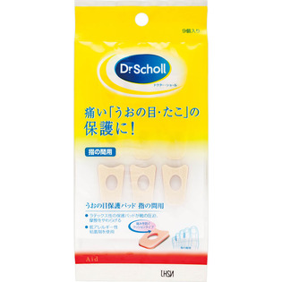

返回列表
产品名称：ドクター・ショール うおの目保護パッド 指の間用

レキットベンキーザー・ジャパン ドクター・ショール うおの目保護パッド 指の間用 ＿
メーカー レキットベンキーザー・ジャパン
JANコード 4986803003546
商品の特徴
痛い「うおの目・たこ」の保護に！
●ラテックス性の保護パッドが靴の圧迫、摩擦をやわらげる
●低アレルギー性粘着剤を使用
痛みを防ぐクッションタイプ
成分・分量
記載無し
用法及び用量
＜使用方法＞
足をきれいに洗い、よく乾かしてからうおの目などの触れると痛い部分がパッドの穴の中央にくるように直接皮膚に貼ってください。パッドが皮膚にきちんと貼れているかどうか確認するために一度軽くパッドを押してください。